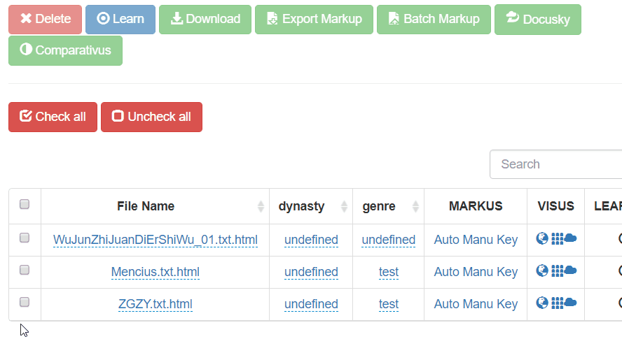
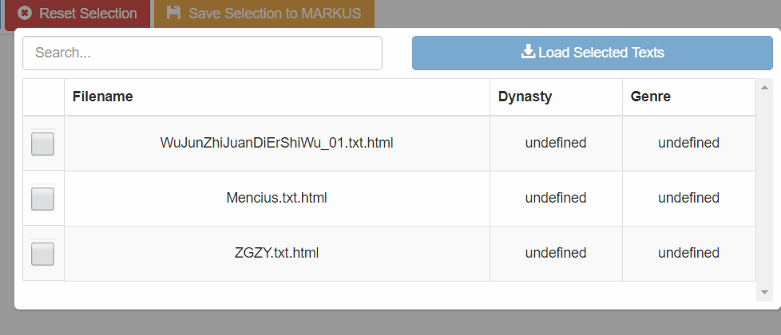
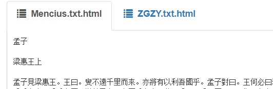
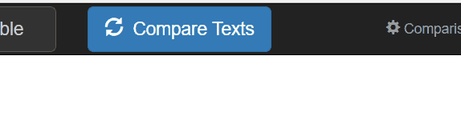
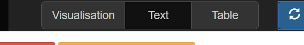
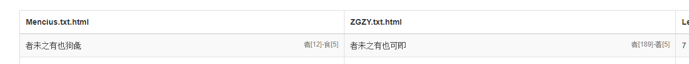
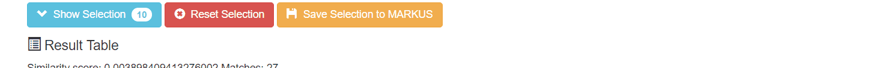
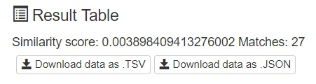
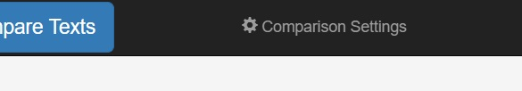

Comparativus Manual
This document contains a brief overview of all the functionality in Comparativus at the time of writing in early April 2018. Although we will strive to keep this document up to date with the latest online version you may find some minor differences between the online version and this manual. If parts of this manual are unclear or you have further questions please don't hesitate to contact either Prof. Dr. De Weerdt or Mees Gelein.
Contents
Below are the contents of this manual. You can click any of the subjects to scroll to that header.
1. Basic Usage
In this chapter will briefly explain the basic usage of Comparativus. As such this chapter can best be seen as a quick start guide. First we will run through the selection of files and different methods of providing Comparativus with files to compare. After that we will take a look at how you run an actual comparison. This will be followed by a description of the review and selection process of the results. Finally we will talk about how you can download the results of your comparison for visualization or further analysis using your own solutions.
i. Selecting Files
Before you can compare files using Comparativus you first need to tell the program what files you want to be compared. As of April 2018 only comparison of two files at a time is possible, although multifile comparison is a planned feature. To select files you have the following options:
MARKUS File Management
Supply two files using the MARKUS file management. ( link).

Comparativus File Selection
Directly navigate to Comparativus and select two files from the file selection menu that will appear. ( link).

Once you have two files selected and loaded you will see them in your screen in a tabbed window as shown in this image:

Clicking on either tab will switch the text overview to that specific text allowing you to read through the text.
ii. Running a Comparison
With two files loaded you are now ready to start a comparison between these texts. This is very simply done by clicking the "Compare Texts" button in the top right of the screen, as shown below:

iii. Viewing & Selecting Results
Once you have run a comparison you will now have results, although that may not yet be immediately clear to you. This is the moment to start talking about pages. Along the top of the screen you will see the following three buttons grouped together:

These buttons take you to the appropriate page to view the comparison in that perspective. A quick rundown of the pages:
- Text: This is the default page. On this page you can see the texts that have been loaded and can browse through them.
- Table: This page will show you the results of your comparison, after it's done ofcourse, in a table view providing you with a quantitive view of the data.
- Visualisation: This page will show you a visual representation of the results of your comparison.
On any of these pages you can select and view your results although the ease of selection and reviewing of results may differ per page. To include a result, also called a match, in your selection you simply click it once. To de-select it you can click it again. Selecting and deselecting of a result in the Table page is shown below:

Once you have a specific result selected, that same result is now shown as selected on all other pages as well. For example: If you select multiple entries on the table page you can now also see these results highlighted on the visualisation and text page.
Another helpful tool in reviewing your selection is the collapsible selection overview. Using this screen you can quickly navigate your selected results and go to the specified page by clicking the corresponding button:

iv. Downloading & Saving Results
Maybe dedicated visualisation or analysis software can provide a deeper insight into the data you just created. Or maybe you just want to download the results of your comparison for future reference. Whatever the reason may be, you can always download your comparison results onto your local computer using the download buttons shown below:

-
Download as TSV: This will download either all the data (if no selection has been made) or a selection
of the data in a
.tsvfile to your local harddrive. For more info on TSV: info. -
Download as JSON: This will download either all the data (if no selection has been made) or a selection
of the data in a
.jsonfile to your local harddrive. For more info on JSON: info.
Alternatively you might want to save the results of your comparison back into the original MARKUS document you have been working on. To use this feature you must first create a selection of results you want to save back into both the MARKUS documents. You do this using the mechanics described in the previous sub-chapter 'Viewing & Selecting Results'.
Once you have a selection ready to be saved into your MARKUS document you press the 'Save Selection to MARKUS' button:

Your results will now be saved into the original MARKUS document you have been working on. If you have made it this far you now know enough about the usage of Comparativus to be able to work with it. In the following chapter we will discuss the tweaking of comparison parameters.
2. Comparison Parameters
The default parameters for comparison seem to work fine for most use cases but sometimes you might want to change the parameters of the comparison to get better results. In the following, very short, subchapters we will briefly go through every setting found in the 'Comparison Settings' menu found in the top right of your screen.

i. Minimum Match Size
Out of all the parameters this is easily the one parameter that holds the most power over the results that will show up from your comparison. This is essentialy a minimum length any match must be to be considered to be added to the results list. Lowering this setting will generally give you more results.
Watch Out: Lowering this settings too much will make your browser crash. The lower boundary for this setting is mostly language dependent, but carefully consider what the shortest meaningful result might be and adjust accordingly. The default (7) seems to be a sweet spot for all Classical Chinese test cases used in development.
ii. Ignore Whitespace
During development we quickly found out that whitespace can create many false positives in your matches especially considering the fact that most of the whitespace encountered in digital texts has been added at a later date and thus is not semantically significant. Therefore we remove all whitespace from a text during the comparison and add it back in after the comparison is done. If you work with texts that do have semantically significant whitespace you can set this parameter to 'No, keep all whitespace'.
The following characters are considered whitespace: linebreak, carriage return, space, non breaking space and tab.
iii. Ignore Punctuation
Shortly after we found out that whitespace created false positives in our results we found the same to be true for punctuation. Once again most of this has been added at a later date, sometimes even by a modern editor. As such it seemed best to, by default, ignore any punctuation during comparison. If your specific text has semantically significant punctuation you can set this parameter to 'No, keep all punctuation' to take punctuation into account during comparison.
The following characters are considered punctuation: `。』」，《》：『？「；,!?
Contact
If after reading this manual you still have some questions on the usage of Comparativus you can contact either Prof. Dr. De Weerdt or Mees Gelein.
For technical questions regarding the algorithm used please contact Mees Gelein.